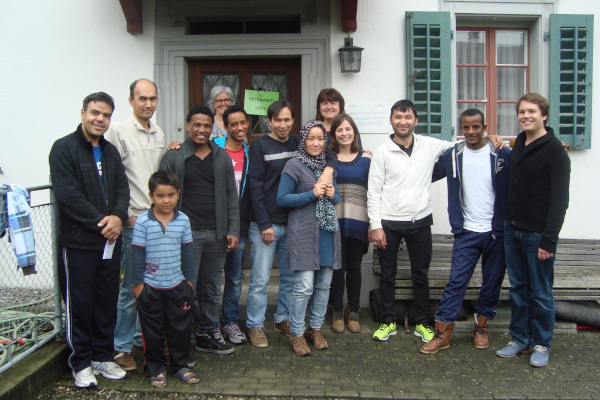
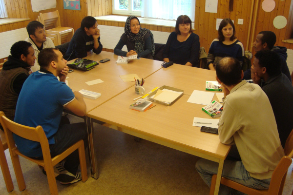

Mitenand Arth-Goldau

Mitmachen

Unterstützen
Alle Aktivitäten von Mitenand Arth-Goldau werden von Freiwilligen
organisiert und begleitet, ohne Entschädigung. Möchtest du uns
unterstützen, hast du eine Frage oder eine Idee? Wir freuen uns über
einen Zustupf in unsere Vereinskasse, entweder einmalig oder als
Gönner/in. Schreibe uns eine E-Mail an mitenand.arth@gmail.com.
Herzlichen Dank für deinen Beitrag!
Spenden
Bank: Raiffeisenbank Rigi
IBAN: CH16 8080 8009 4016 2102 6
Lautend auf: Mitenand Arth-Goldau, Tunelweg 17, 6414 Oberarth